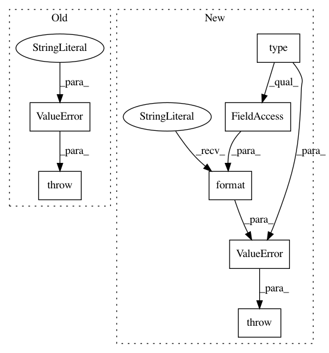

ab14b042cccbb864cf5e72a8588b9a689703308f,stellar/data/explorer.py,SampledBreadthFirstWalk,_check_parameter_values,#SampledBreadthFirstWalk#Any#Any#Any#,259
Before Change
)
if n_size is None:
raise ValueError(
"The neighbourhood size, n_size, must be a list of integers not None"
)
if type(n_size) != list:
raise ValueError(
"The neighbourhood size, n_size, must be a list of integers"
)
After Change
)
if n_size is None:
raise ValueError(
"({}) The neighbourhood size, n_size, must be a list of integers not None.".format(
type(self).__name__
)
)
if type(n_size) != list:
raise ValueError(
"({}) The neighbourhood size, n_size, must be a list of integers.".format(
type(self).__name__
In pattern: SUPERPATTERN
Frequency: 5
Non-data size: 7
Instances
Project Name: stellargraph/stellargraph
Commit Name: ab14b042cccbb864cf5e72a8588b9a689703308f
Time: 2018-07-05
Author: pantelis.elinas@data61.csiro.au
File Name: stellar/data/explorer.py
Class Name: SampledBreadthFirstWalk
Method Name: _check_parameter_values
Project Name: stellargraph/stellargraph
Commit Name: ab14b042cccbb864cf5e72a8588b9a689703308f
Time: 2018-07-05
Author: pantelis.elinas@data61.csiro.au
File Name: stellar/data/explorer.py
Class Name: UniformRandomWalk
Method Name: _check_parameter_values
Project Name: scikit-multiflow/scikit-multiflow
Commit Name: 3e9cdf545d08e5c2f9f2b8767ba032b19b5d5afd
Time: 2018-10-08
Author: jacob.montiel@gmail.com
File Name: src/skmultiflow/visualization/evaluation_visualizer.py
Class Name: EvaluationVisualizer
Method Name: on_new_train_step
Project Name: scikit-multiflow/scikit-multiflow
Commit Name: 259a336c8f0d8c3de29c76c2e3c7a34d8a05c361
Time: 2018-10-06
Author: jacob.montiel@gmail.com
File Name: src/skmultiflow/visualization/evaluation_visualizer.py
Class Name: EvaluationVisualizer
Method Name: on_new_train_step
Project Name: stellargraph/stellargraph
Commit Name: 071dd88f8bbd56102de31588724f238b8837a53c
Time: 2019-01-29
Author: yuriy.tyshetskiy@data61.csiro.au
File Name: stellargraph/layer/graph_attention.py
Class Name: GraphAttention
Method Name: __init__